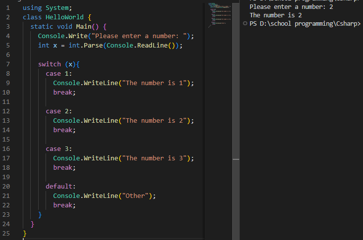
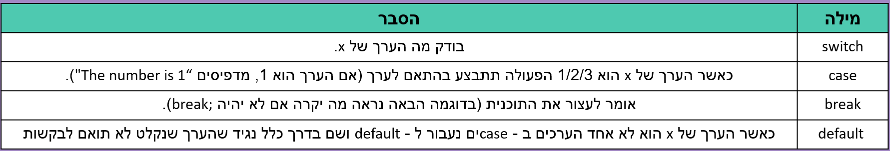
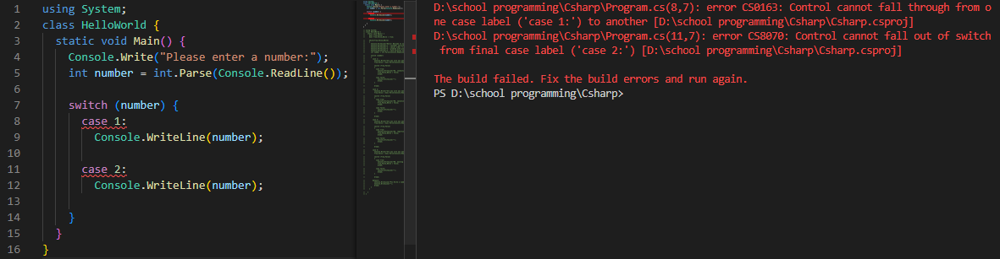
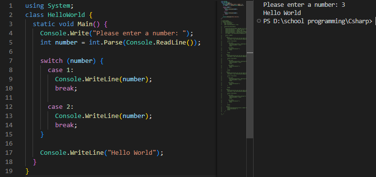
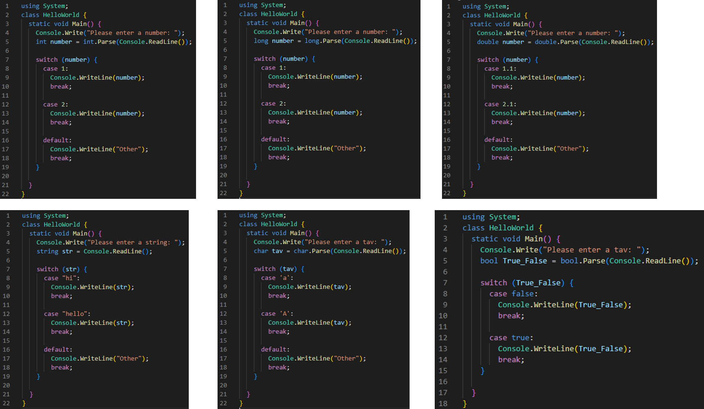

Switch Case
סוד
?Switch Case מה זה
.הוראת בחירה :Switch Case
.if כשנרצה לבצע פעולה/פעולות אחרי שנקלט ערך מסוים שנבחר לפני הריצה, כמו Switch Case - נשתמש ב

:נסביר

?break; מה היה קורה אם נוריד את
!הודעת שגיאה

?שמתאים לערך שנקלט case כשאין default case - מה היה קורה אם נוריד את ה
!Switch Case - התוכנית תדלג על ה

,לא חייב לקבל רק ערכים מסוג מספר שלם Switch Case
.int, long, float, double, string, char, bool :אלא את כל הסוגים הקיימים

.Switch Case - בתיקייה הבאה תוכלו למצוא דוגמה לשימוש ב
התיקייה
סוד
סוד
סוד
סוד